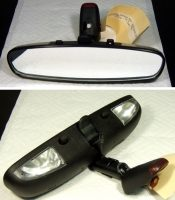
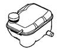
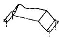
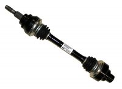
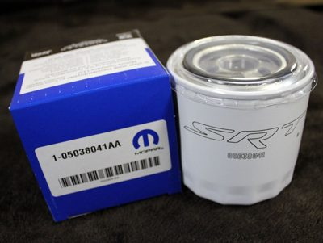
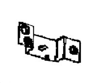

Dodge Viper parts, new & hard-to-find
Over 1,824 genuine Mopar, discontinued and takeoff parts for every Viper generation — plus SRT10 Ram and Prowler.
Did you know? As of late , the website and remaining inventory of Viper Parts of America (VPA) were sold to PartsRack Inc. and Don Scharf Automotive. These two companies have partnered many times in the past 25 years to purchase bulk, surplus inventories from a variety of Dodge, Chrysler, and OE MFR entities.
This site has over 2,500 products, some of which are not available new from Mopar, or from the used parts marketplace. If you DON'T see what OE parts you need, please contact us as noted BELOW. [For PERFORMACE PARTS see PartsRack.com.]
Shop by category
 Body Except Doors392 parts
Body Except Doors392 parts Electrical267 parts
Electrical267 parts Engine249 parts
Engine249 parts
Interior Trim186 parts Windshield Wiper / Washer183 parts
Windshield Wiper / Washer183 parts Discontinued Parts132 parts
Discontinued Parts132 parts Doors / Related Parts129 parts
Doors / Related Parts129 parts Mopar & Viper Accessories97 parts
Mopar & Viper Accessories97 parts Frames / Bumpers87 parts
Frames / Bumpers87 parts Suspension / Drive84 parts
Suspension / Drive84 parts Fuel System79 parts
Fuel System79 parts Brakes74 parts
Brakes74 parts Steering71 parts
Steering71 parts
Cooling70 parts Instrument Panel / Radio / Consoles70 parts
Instrument Panel / Radio / Consoles70 parts Wheels65 parts
Wheels65 parts Air Conditioning / Heater57 parts
Air Conditioning / Heater57 parts Fasteners & Hardware57 parts
Fasteners & Hardware57 parts
Exhaust56 parts Tires47 parts
Tires47 parts Transmission37 parts
Transmission37 parts Rear Axle / Differential26 parts
Rear Axle / Differential26 parts Emission System23 partsClutch21 parts
Emission System23 partsClutch21 parts Mopar Performance Parts18 parts
Mopar Performance Parts18 parts SRT10 Ram Truck18 parts
SRT10 Ram Truck18 parts Prowler10 parts
Prowler10 parts
Propeller Shafts / U-Joints9 parts Historical / Collectible6 parts
Historical / Collectible6 parts Gift Certificates5 parts
Gift Certificates5 partsFeatured parts







Store notices
Read our shipping, export and returns notes before ordering. Orders by email to info@PartsRack.com.